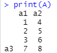
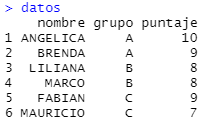
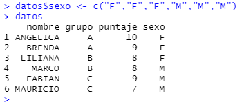

Introducción a R¶
Este es un tutorial básico sobre el programa. Visite la página de R para más información.
R es un lenguaje de programación para cómputo estadístico. Tiene una gran cantidad de funciones que permiten ejecutar análisis estadísticos tradicionales, tales como regresión y modelos lineales, prebas estadísticas, clasificación análisis de series de tiempo, entre otros.
Una ventaja de R es que es altamente extensible a traves de paquetes que cualquier persona puede crear y aportar.
R es un software libre y es ampliamente usado en el ámbito académico e incluso en algunas empresas.
Objetos de R¶
R es un lenguaje de programación que usa objetos. Estos objetos tienen identidad, atributos y propiedades.
Tambien puede considerarse como un intérprete, es decir que espera acciones del usuario. Cuando el usuario ejecuta comandos, R los ejecuta línea por línea.
Los comandos o expresiones más comunes son las asignaciones, es decir se asigna un valor a una variables. Cada comando suele escribirse en una sola línea o terminar con punto y coma.
R es un lenguaje sensible a mayúsculas y minúsculas, esto es un factor a tomar en cuenta para evitar errores.
Interaz gráfica
R tiene una interfaz gráfica para crear código de forma más amigable. Visite R Studio para más información.
Cuando se inicia una sesión, se asigna un espacio de trabajo (workspace) en memoria y un directorio de trabajo (working directory).
El espacio de trabajo sirve para almacenar objetos creados, tales como vectores, funciones entre otros.
Para conocer el directorio de trabajo puede escribir en consola:
getwd()
Para cambiar use la función setwd("dir"), donde dir es el nuevo directorio.
Barras verticales
R no reconoce una sola barra / en los directorios de windows. Use doble barra // o una barra invertida \.
Vectores¶
Un vector es un objeto con uno o más elementos. Puede contener elementos numéricos o caracteres.
Se pueden crear vectores con la función c(), por ejemplo:
x = c(2,1,5)
z = c("ABC","AEI","XYZ")
Los vectores permiten algunas operaciones, las más comunes son la suma +, resta -, multiplicación *, división. / y potencia ^, así como valores booleanos.
y = m*x+n
xy = x > y
Operación entre vectores
Las operaciones entre vectores son elemento a elemento. Si los elementos no tuvieran el mismo tamaño, el de menor tamaño se recicla (repite sus elementos) hasta tener el mismo número de elementos.
Por ejemplo, la operación nx = n + x dará como resultado:
[1] 7 6 10
Los vectores tienen una dimensión y para conocerla se puede usar la función length(). Por ejemplo length(x) nos daría como resultado:
[1] 3
ya que sus elementos son:
[1] 2 1 5
También se puede acceder a sus elementos mediante el operador [], por ejemplo para conocer el segundo elemento de x se puede usar x[2] y el resultado es:
[1] 1
Para acceder a más de un elemento, es posible apuntar a la posición del elemento, por ejemplo x[c(1,2)] o x[1:2].
En ambos, el resultado sería:
[1] 2 1
El operador : sirve para indicar una secuencia consecutiva. Por ejemplo i = 1:10 crearía un vector de 10 elementos del 1 al 10, esto es útil para crear sucesiones o índices.
Para crear secuencias más complejas se puede usar la función seq().
Por ejemplo con seq(from = 1,to = 10,by = 1) se crea una secuencia del 1 al 10 incrementando el valor en 1 y se obtiene el mismo resultado que con 1:10.
Otra forma de crear un vector es mediante la función rep(). Por ejemplo la siguiente expresion:
u = rep(x = x,each = 2,times = 3)
Crea un el vector u que contiene cada elemento del vector x 2 veces y esta secuencia se recrea 3 veces.
[1] 2 2 1 1 5 5 2 2 1 1 5 5 2 2 1 1 5 5
Nombres de vector¶
Una propiedad de los vectores es que sus elementos pueden tener un nombre.
Se puede usar la función names() para consultar o asignar nombres a un vector. El siguiente código asignará nombres a los elementos del vector a1.
nombres <- c("uno","dos","tres")
names(a1)<-nombres
Los nombres también pueden ser usados para acceder a los elementos de un vector, por ejemplo para acceder al segundo elemento, se puede usar su nombre correspondiente, es decir a1["dos"].
Escalares¶
Un escalar es un vector con un solo elemento.
Se pueden crear escalares con el símbolo de asignación <- o =.
n <- 5
m = n + 1
a = "Hola mundo!"
Los escalares son útiles para guardar algún valor. Pueden ser considerados como una variable.
También puede haber escalares lógicos o booleanos, por ejemplo si se construye nm = n>m su valor sería:
[1] FALSE
Matrices¶
Una matriz es una arreglo de dos dimensiones (renglones y columnas) que contiene valores, especialmente numéricos. Tiene n renglones y p columnas, es decir tiene np elementos.
Para crea una matriz, se usa la función matrix() cuya sintaxis es la siguiente:
matrix(data = objeto, nrow = valor, ncol = valor <, byrow = FALSE>)
donde data representa un vector o una expresión, nrow el número de renglones que se desean, ncol el número de columnas y el argumento opcional byrow indica si se deberían llenar por columnas.
Si se ejecuta el siguiente comando:
A1 = matrix(data = u)
el resultado sería una matriz de 18 renglones y una columna.
Si se desea una matriz de otra dimensión se puede usar este código.
A1 = matrix(data = u,nrow = 6,byrow = TRUE)
También pueden crearse matrices a partir de vectores, mediante las funciones cbind() y rbind(). La primera permite concatenar columas y la segunda concatena renglones, por ejemplo
a1 = c(1,2,3)
a2 = c(4,5,6)
a3 = c(7,8)
A = rbind(cbind(a1,a2),a3)
El resultado es el siguiente:

Dimensiones¶
Para conocer el tamaño o dimensiones de una matriz se puede usar la función dim()
dim(A)
Note que se desplegará en la consola el resultado mostrando la dimensión.
2 4
Para conocer el número de renglones y columnas por separado se pueden usar las funciones nrow() y ncol().
nrow(A)
ncol(A)
Esto es importante ya que como se verá más adelante, nos permitirá hacer operaciones entre matrices.
Elementos de una matriz¶
Para acceder a los elementos de una matriz, podemos referirnos por medio de su posición [row,column], por ejemplo para acceder al elemento ubicado en el renglón 1 de la columna 1 se usa:
A[1,1]
También se puede usar el número de elemento, empezando de izquierda a derecha por columna, en este caso A[1].
Para obtener todo el renglón o toda la columna, únicamente se escribe el elemento que se quiere obtener, pero se debe dejar la coma, por ejemplo
A[1,]
A[,2]
Traerían el primer renglón y la segunda columna respectivamente.
Al igual que en el caso de los vectores para trae un rango específico se puede usar el operador : o un vector indicando los elemento deseados.
A[1:2,2]
A[c(1,3),1]
Nombres de una matriz¶
De la misma forma que los vectores, las matrices pueden tener nombres en sus elementos.
Además se puede consultar y asignar un nombre a sus columnas y renglones usando las funciones colnames() y rownames().
De la misma forma, se pueden usar estos nombre para acceder a sus elementos.
Operaciones¶
Al igual que los vectores, se pueden hacer operaciones entre matrices.
El siguiente cuadro resume las operaciones disponibles
| Nombre | Operador | Ejemplo | Nota |
|---|---|---|---|
| Suma | + |
A + B |
Las matrices deben tener la misma dimensión |
| Resta | - |
A - B |
Las matrices deben tener la misma dimensión |
| Multiplicación (Elemento a elemento) | * |
A * B |
Las matrices deben tener la misma dimensión |
| División (Elemento a elemento) | / |
A / B |
Las matrices deben tener la misma dimensión |
| Potencia | ^ |
A ^ B |
Las matrices deben tener la misma dimensión |
Adicional a esto, se puede hacer la multiplicación de matrices usando el operador %*%.
Para poder realizar esta operación, las matrices deben ser comformables, es decir, el número de columnas de A, debe ser iguales al número de renglones de B y el resultado será una matriz de dimensiones iguales al número de renglones de A y el mismo número de columnas de B.
Data Frames¶
Los data fames son objetos usados para almacenar datos. PAra conocer todas sus propiedades, vea la ayuda de R usando el comando help("data.frame").
Una manera fácil de crear conjunto de datos es mediante la función data.frame(), pasándole vectores como argumentos. Por ejemplo, el siguiente código muestra cómo construir un conjunto de datos.
datos = data.frame(
nombre = c("ANGELICA","BRENDA","LILIANA","MARCO","FABIAN","MAURICIO"),
grupo = c("A","A","B","B","C","C"),
puntaje = c(10,9,8,8,9,7))
El resultado es el siguiente.

Un dataset comparte propiedades similares a las listas y vectores. Para acceder a sus valores, se puede usar los corchetes [renglón,columna] para seleccionar ya sea renglones, columnas o ambas.
datos[3,]
datos[,2]
datos[1:3,1]
También es posible acceder a las variables mediante $, seguido del nombre de la variable. Note que el resultado es un vector.
datos$nombre
datos$nombre[1:3]
Se pueden agregar nuevas variables usando el operador $ seguido del nuevo nombre, por ejemplo
datos$sexo <- c("F","F","F","M","M","M")

Es posible pasar de una matriz a un datafreme mediante la función as.data.frame(), pasándole como argumento una matriz.
A = matrix(1:9,3,3)
Adato = as.data.frame(A)
Listas¶
Paquetes¶
R dispone de miles de paquetes que pueden descargarse libremente para enriquecerse son nuevas características. Estos paquetes están almacenados en el CRAN y pueden instalarse fácilmente desde la consola con el siguiente comando
install.packages()
Por ejemplo, si se desea instalar el paquete ggplot2 se puede usar el siguiente comando.
install.packages("ggplot2")
R almacenará los archivos en la carpeta personal llamada biblioteca del usuario o User library. Frecuentemente al instalar un paquete R descarga otros paquetes relacionados llamados dependencias que sirven para que las funciones del paquete trabajen adecuadamente.
Sin embargo, aún no podrá usarse debido a que es necesario cargarla mediante el comando library(), por ejemplo, para cargar el paquete ggplot2 se debe ejecutar
library(ggplot2)
Con esto, todas las funciones y objetos del paquete estarán definidos y listos para usarse.
Ayuda¶
R dispone de un comando especial para obtener ayuda desde la consola. Por ejemplo para buscar ayuda sobre matrices, se puede escribir desde la consola el comando
?matrix
o bien con
help(topic = "matrix")
y con eso se abrirá un documento de ayuda.
Para realizar una búsqueda más general simplemente se deben escribir doble signo de interrogación.
??matrix
El sistema de ayuda nos mostrará los términos relacionados en todos los paquetes que encuentre.
También se puede obtener ayuda acerca de una paquete en específico, por ejemplo
help(package = "ggplot2")
y con ello se obtendrá la documentación del paquete en específico.